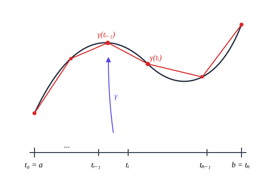
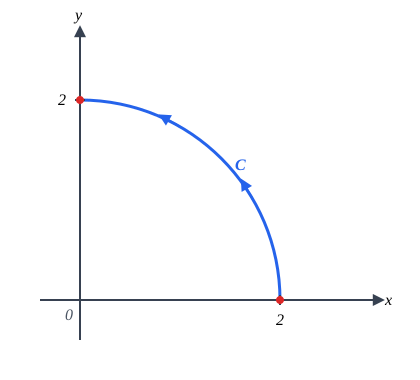
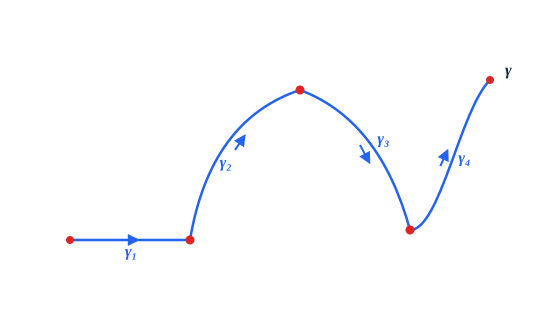
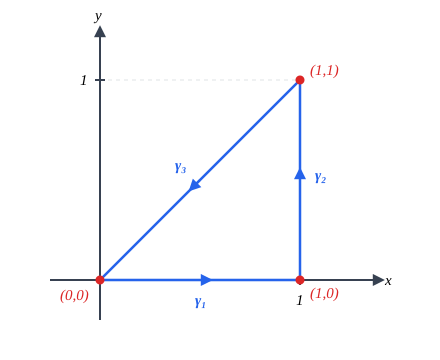
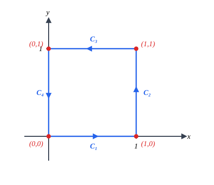

Considere \(\vec{F}\) um campo vetorial contínuo em \(\mathbb{R}^3\) e \(\gamma: [a,b] \rightarrow \mathbb{R}^3\) uma curva suave.
Caso Particular: Se \(\gamma\) for um segmento de reta e \(\vec{F}\) for um campo vetorial constante, definimos a integral de linha de \(\vec{F}\) sobre \(\gamma\) como o produto interno:
Caso Geral: Seja \(\gamma\) uma curva qualquer e \(\vec{F}\) um campo vetorial contínuo qualquer. Seja \(\gamma(t)\) uma parametrization de \(\gamma\) e divida o intervalo \([a,b]\) em \(n\) subintervalos \([t_{i-1}, t_i]\text{,}\)\(i = 1, \dots, n\text{,}\) todos de comprimento \(\Delta t_i = t_i - t_{i-1} = \frac{b-a}{n}\text{.}\)

Figura2.2.1.Aproximação da curva \(\gamma\) por segmentos de reta
Cada subintervalo \([t_{i-1}, t_i]\) determina um segmento de reta com extremidades \(\gamma(t_{i-1})\) e \(\gamma(t_i)\) em \(\gamma\text{.}\) Ou seja, a curva \(\gamma\) pode ser aproximada pela união desses segmentos.
Assim, seria natural dizer que uma aproximação para a integral de linha de \(\vec{F}\) sobre \(\gamma\) é dada pela soma:
A aproximação de \(\gamma\) por segmentos melhora quando aumentamos a quantidade de segmentos (isto é, quando dividimos \([a,b]\) em mais subintervalos).
Definição2.2.2.
Definimos a integral de linha do campo \(\vec{F}\) sobre a curva \(\gamma\) por:
Observação sobre notação: É comum encontrarmos nos livros a notação \(\int_{\gamma} \vec{F} \cdot d\vec{r}\text{,}\) onde \(\vec{r}(t) = \gamma(t)\text{.}\)
Considere \(\vec{F}(x,y) = (3y, 7x)\) e \(C\) a curva que é a parte da circunferência \(x^2 + y^2 = 4\) situada no primeiro quadrante, orientada no sentido anti-horário. Encontre \(\int_{C} \vec{F} \cdot d\vec{r}\text{.}\)

Figura2.2.6.Arco de circunferência no primeiro quadrante
indica a integral de linha do campo \(\vec{F}(x,y,z) = P\vec{i} + Q\vec{j} + R\vec{k}\) sobre a curva \(\gamma: [a,b] \rightarrow \mathbb{R}^3\text{.}\)
Exemplo2.2.7.
Calcule \(\int_C xy \, dx + yz \, dy + zx \, dz\text{,}\) onde \(C(t) = (t, t^2, t^3)\text{,}\)\(0 \le t \le 1\text{.}\)
Calcule \(\int_{\gamma} -y \, dx + x \, dy\text{,}\) onde \(\gamma: [a,b] \rightarrow \mathbb{R}^2\) é uma curva suave cuja imagem é a elipse \(\frac{x^2}{4} + \frac{y^2}{9} = 1\text{,}\) percorrida no sentido anti-horário.
Uma parametrização da elipse no sentido anti-horário é \(\gamma: [0, 2\pi] \rightarrow \mathbb{R}^2\) dada por \(\gamma(t) = (2\cos t, 3\text{sen } t)\text{.}\)
Daí, \(x = 2\cos t \implies dx = -2\text{sen } t \, dt\) e \(y = 3\text{sen } t \implies dy = 3\cos t \, dt\text{.}\)
Logo:
\begin{align*}
\int_{\gamma} -y \, dx + x \, dy \amp = \int_{0}^{2\pi} [-3\text{sen } t (-2\text{sen } t \, dt) + 2\cos t (3\cos t \, dt)]\\
\amp = \int_{0}^{2\pi} (6\text{sen}^2 t + 6\cos^2 t) \, dt = \int_{0}^{2\pi} 6(\text{sen}^2 t + \cos^2 t) \, dt\\
\amp = \int_{0}^{2\pi} 6 \, dt = \left. 6t \right|_{0}^{2\pi} = 12\pi
\end{align*}
E se considerássemos a mesma curva com orientação contrária? Seja \(\beta(t) = (2\text{sen } t, 3\cos t)\text{,}\)\(t \in [0, 2\pi]\text{,}\) que descreve a mesma elipse no sentido horário.
Temos \(x = 2\text{sen } t \implies dx = 2\cos t \, dt\) e \(y = 3\cos t \implies dy = -3\text{sen } t \, dt\text{.}\)
Calculando a integral sobre \(\beta\text{:}\)
\begin{align*}
\int_{\beta} -y \, dx + x \, dy \amp = \int_{0}^{2\pi} [-3\cos t (2\cos t \, dt) + 2\text{sen } t (-3\text{sen } t \, dt)]\\
\amp = \int_{0}^{2\pi} -6(\cos^2 t + \text{sen}^2 t) \, dt = -12\pi
\end{align*}
Notamos então que para \(\vec{F} = -y\vec{i} + x\vec{j}\text{:}\)
Subseção2.2.2Integral de Linha sobre uma Curva Suave por Partes
Dizemos que uma curva \(\gamma: [a,b] \rightarrow \mathbb{R}^n\) (\(n=2,3\)) é **suave por partes** (ou de classe \(C^1\) por partes) quando podemos particionar \([a,b]\) em subintervalos \([t_{i-1}, t_i]\text{,}\)\(i = 1, \dots, k\text{,}\) tais que cada restrição \(\gamma_i: [t_{i-1}, t_i] \rightarrow \mathbb{R}^n\) é suave.

Figura2.2.10.Curva suave por partes composta por subcurvas \(\gamma_1, \gamma_2, \gamma_3, \gamma_4\)
A integral de um campo contínuo \(\vec{F}\) sobre uma curva suave por partes \(\gamma = \gamma_1 \cup \gamma_2 \cup \dots \cup \gamma_k\) é a soma das integrais sobre cada trecho suave:
Calcule \(\int_{\gamma} -y \, dx + x \, dy\text{,}\) onde \(\gamma\) é uma curva cuja imagem é a fronteira do triângulo de vértices \((0,0)\text{,}\)\((1,0)\) e \((1,1)\text{,}\) orientada no sentido anti-horário.

Figura2.2.12.Triângulo com vértices (0,0), (1,0) e (1,1) orientado no sentido anti-horário
Considere \(C\) a fronteira do quadrado no plano \(xy\) de vértices \((0,0)\text{,}\)\((1,0)\text{,}\)\((1,1)\) e \((0,1)\text{,}\) orientada no sentido anti-horário. Calcule a integral de linha:
\begin{equation*}
\int_{C} x^2 \, dx + xy \, dy
\end{equation*}

Figura2.2.14.Quadrado unitário com vértices (0,0), (1,0), (1,1) e (0,1) orientado no sentido anti-horário